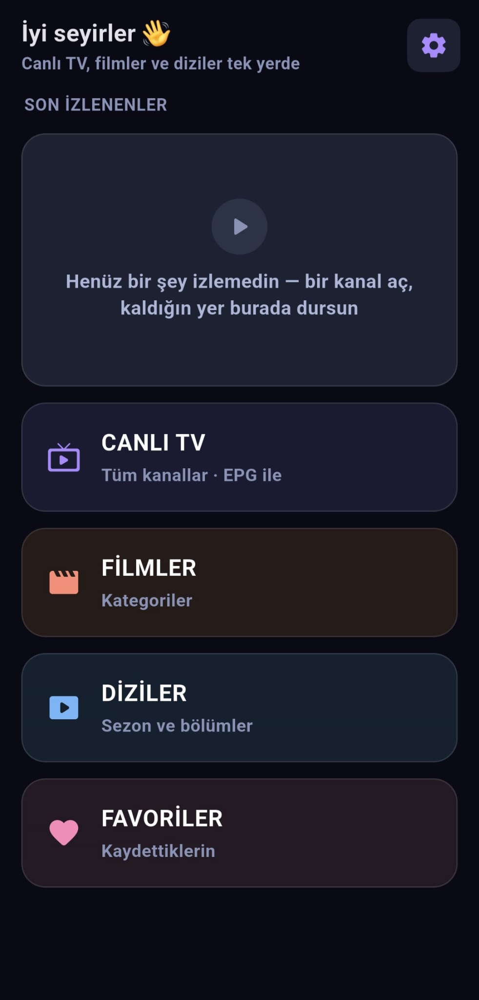

HStream
Android ve Android TV için IPTV oynatıcısı.
Xtream Codes, M3U bağlantısı veya cihazındaki M3U dosyasıyla bağlan; canlı yayınlar, filmler ve diziler tek ekranda.

Ne var içinde
-
CANLI TV Kategorilere ayrılmış kanallar, arama ve favoriler
-
FİLMLER Kategorilere göre listelenir, detay ekranıyla
-
DİZİLER Sezon ve bölümler, bölüm şeridiyle geçiş
-
OYNATICI Kaldığın yerden devam; kumanda ve tam ekran desteği
-
RESİM İÇİNDE RESİM Canlı yayınlar dahil; film ve dizilerde 10 sn geri/ileri
-
HIZLI AYARLAR Hız, altyazı boyutu, uyku zamanlayıcısı, tampon süresi
-
SON İZLENENLER Tür etiketi ve kalınan dakika
Kurulum
- APK'yı indir Yukarıdaki düğme her zaman en son sürüme gider.
- Bu kaynaktan kuruluma izin ver Android ilk seferde sorar. Telefonda: Ayarlar → Uygulamalar → Özel erişim → Bilinmeyen uygulamaları yükleme.
- Aç ve kaynağını ekle Xtream bilgilerini, bir M3U bağlantısını ya da cihazdaki M3U dosyasını gir.
Güncellemeler
Her sürüm aynı anahtarla imzalanır; yeni sürüm eskisinin üstüne kurulur ve kaynakların, ayarların, izleme geçmişin korunur.
Uygulama yeni sürümü kendisi de bildirir: Ayarlar → Hakkında → Güncellemeyi denetle.
Yenilikler — v1.0.0
Sık sorulan
Play Protect uyarı veriyor
Play Store dışından kurulan uygulamalarda çıkan standart uyarıdır. "Yine de kur" diyerek devam edebilirsin.
Kendiliğinden güncelleniyor mu?
Hayır — Android bir uygulamanın kendini değiştirmesine izin vermez. HStream yeni sürümü bildirir ve dosyaya yönlendirir; kurmak tek dokunuş.
Hangi kaynaklar çalışıyor?
Xtream Codes, M3U bağlantısı ve cihazındaki M3U dosyası. HStream içerik ya da abonelik sağlamaz; kendi sağlayıcını kullanırsın.
Ücretli mi?
Ücretsiz ve açık kaynak. Reklam yok, hesap açmak gerekmez. Kaynak kodu AGPL-3.0 ile yayınlanır.